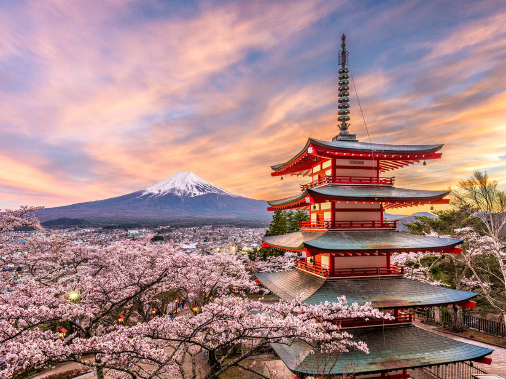

Informacion sobre la pais de Japon:
- Está prohibido fumar en las calles por el riesgo de quemar a alguien (solo puede hacerse parado y en torno a puntos marcados, en los que hay ceniceros). Sin embargo, se puede fumar en bares y restaurantes.
- Nunca dejes una propina; es inusual y extraño. Si la cuenta son 297 yenes y dejas en el plato los tres del cambio (dos céntimos) el camarero es capaz de seguirte hasta la calle para recordarte que has olvidado algo que es tuyo.
- El parachoques de los coches es solo de decoración. Nadie aparca tan ajustado como para poder rozar a los vehículos contiguos. O queda más de medio metro entre uno y otro… o no se aparca.
- En las comunidades de vecinos, la gestión de las basuras es muy estricta. La orgánica se saca todos los días, pero la de reciclaje se saca una vez a la semana según un código; por ejemplo: martes, papel; miércoles, plásticos y envases, etc. Como te lo saltes, tus vecinos te llamarán la atención muy enfadados.
- El dinero, las tarjetas de crédito o las de visita se dan siempre con dos manos. Y si te la dan en una reunión de trabajo tienes que mirarla detenidamente durante unos segundos y quedarte con el apellido y el cargo de quien te la ofrece.
- En el metro, piden disculpas a los viajeros por los altavoces si el tren va a llegar con un minuto de retraso.
Sitios de interes en Japon
¡Atrévete a explorar por tu cuenta y no tengas miedo a perderte! Nosotros te ayudaremos a encontrar el camino. Para ello hemos escogido las mejores ciudades de Japón que, a nuestro parecer, te pueden servir como marco de trabajo y punto de partida. Así que… ¡preparados, listos, YA! Éstas son los mejores lugares que visitar de Japón que nosotros te recomendamos:
Parque de Hitsujiyama.
Japón es conocido por sus cerezos en flor, así que una de las cosas imprescindibles que debes hacer en el país es visitarlo en la época de la floración. ¿Te has fijado en las flores de la foto? Son las hermosas shibazakura, también llamadas “césped de flores”, que podrás ver si visitas el Parque de Hitsujiyama.

Hakone.
Si el tiempo está de tu lado, Hakone es un destino popular desde el que podrás disfrutar de unas vistas estupendas del Monte Fuji. La visita es una opción estupenda tanto para una excursión de un día como para pasar la noche, ya que además de aguas termales tendrás un montón de opciones para entretenerte.
Nagoya.
Nagoya es la ciudad más grande del centro de Japón y, sin embargo, muchos viajeros la consideran otro punto más en la ruta de Tokio a Kioto. A pesar de ser una de las ciudades más grandes del país, Nagoya suele verse ensombrecida por Tokio y Kioto en cuanto a destino urbano e histórico. Pero aquellos que decidan bajarse del tren, descubrirán que Nagoya tiene muchas joyas increíbles y poco conocidas.

Monte Fuji.
En los últimos años el volcán activo más grande de Japón ha atraído a gente de todas partes del mundo que quería alcanzar su cima. La temporada de ascensos al Monte Fuji comienza oficialmente en verano, concretamente a principios de julio, y termina a mediados de septiembre, un período estacional breve en el que penas cae nieve en la montaña y en el que el tiempo suele ser bastante suave.
Arashiyama.
Aunque la mayoría de atracciones de Kioto están al este, tendrás que poner rumbo oeste, hacia a Arashiyama, para poder ver un típico bosque de bambú japonés. Este lugar tan cool es desde hace mucho tiempo un popular retiro natural entre los japoneses, y sus orígenes se remontan a la Era Heian. Además del impresionante bosque de bambú, también te encantará el Templo Tenryu-ji y el Parque de los Monos de Iwayatama. En lo que a tiempo de viaje se refiere, lo mejor es que reserves medio día para ir a Arashiyama.
Parque de Nara.
Situado más o menos a una hora del sur de Osaka, el Parque de Nara es famoso por sus adorables y traviesos ciervos. Además de estas rumiantes y salvajes criaturas, el parque de Nara también tiene dos importantes puntos de interés cultural: el Buda gigante del templo Todai-ji y el Gran Santuario Kasuga.
Historia del pais Japon
Japón es un país ubicado al este de Asia, mejor conocido como la Tierra del Sol Naciente. Una nación en principio feudal, donde la máxima representación del poder era el emperador, el cual tenía una función espiritual. Después le seguían los shogun, tradicionalmente budistas que podían ser entendidos como los reyes en las diferentes regiones que conformaban Japón. Los jefes militares eran llamados Daimyo, los samuráis eran guerreros, los ronin soldados y luego seguían los campesinos. Los ninjas son de origen japonés y eran considerados los mercenarios de los pueblos.
En el inicio su religión era el sintoísmo, basada en la adoración de los kami o espíritus de la naturaleza. La estructura de gobierno era militar, especialmente en los tiempos de Tokugawa Leyasu, quien podría entenderse en la cultura latinoamericana como un caudillo.
Japón siempre ha velado por la protección de su cultura, por lo que se enfocaron en expulsar el catolicismo de sus tierras. Tenían un comercio centralizado y guardaban relación con países como China, Países Bajos y Corea..
Cultura del pais Japon
La cultura japonesa se rige en cuanto a relaciones interpersonales por el giri, nombre otorgado al conjunto de deber, obligación y honor, lo cual genera bastante contraste respecto a la tradición individualista de Occidente.
Las situaciones familiares son bastante más laxas en asuntos relacionados a la moralidad o la conducta socialmente aceptada, pero a cambio la relación con los superiores jerárquicos o con los desconocidos es en extremo formal.
También se profesa un respeto enorme a los ancianos y a los antepasados, a quienes a menudo se rinde culto espiritual en altares hogareños.